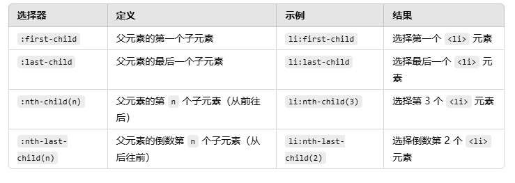

CSS有外部，内部，内联三个方式进行修饰
外部是在<head>标签中添加一个<link>标签，写入rel = stylesheet和href的值
内部是在原本html的<head>标签里面添加<style>标签后，在里面写代码
内联是直接在标签里面写修饰代码
选择者部分:选择者+{ }
1. *号表示选择全部
2. 标签也可以进行选择
3. id选择的话需要用#xxx{},只可选择一个
4. class选择的话需要用.xxx{}，可多选
5. 选择者可以被逗号分开罗列出来使用
6. 可通过tag中的属性选择，tag[attribute]{}
7.1 子选择器(>),子选择器只会选择直接属于父级的子元素
7.2 后代选择器（空格）,后代选择器会选择所有属于父元素的子元素
8. 同级选择器分为紧邻兄弟选择器 (+)和普通兄弟选择器 (~)，前者用于选择紧跟在某个元素之后的相邻兄弟元素，后者用于选择某个元素之后的所有兄弟元素（不限于直接相邻）。
9. 反应选择者，tag:hover{}是鼠标悬停反应，tag:active{}是鼠标点击反应
10. 链接选择者， a:link{}选择尚未访问过的链接。a:visited{}选择已经访问过的链接。
11. input:checked选择处于“选中”状态的输入元素。 input:focus选择当前获得焦点的元素。input::enabled选择可用状态的输入元素。input:disabled选择不可用状态的输入元素。
12. 结构选择器解释
